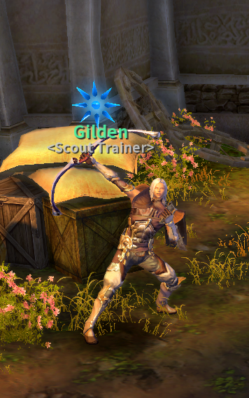

Aion is an MMORPG based on both PVP and PVE. Elden had chosen this specific patch because it is content rich in both pvp and pve. So in this guide, let's introduce all the magic that comes from this patch, and why we love it so much.
Let's talk about Leveling!
In Elden aion we are more focused on Endgame while we still offer leveling and questing experience the classic way of Aion. You are giving at early levels free untradeable scrolls, candy, titles to help you leveling up easily. as well as upon reaching level 10 and completing your ascension quest you obtain your starter gear. We baked a custom starter gear appearance because we know everyone is bored from the same blinding white gear look we always had. We have a sleek new outfits that we are sure you're going to love.
You can see starter gear over here
If you want to know more about Leveling, here's the two guides for them.
Instances in this patch
The best way to level up in Elden aion is by playing through the available instances as instances mobs do generate the highest amount of experience, you'd encounter instances like, Haramel, Nochsana training camp, Fire temple. And as Elyos you might encounter Adma stronghold, while as Asmodian you might encounter Alquimia lab; and in both cases you'll run Beshmudir temple to finish off your leveling.
Guides for these instances might come later; but for now running through these instances, clearing as much as you can is sufficent information and guide; you may look at leveling guides to
Cube upgrade and limitations
In this patch you can unlock 126 slots of your cube, you first have to complete the quests of your faction as well as interact with cube expansion npcs; after you complete all these steps you may use cube expansion tickets found in either lumen shop or broker, you can use these tickets 4 time to achieve the 126 slots
Follow more indepth guide for cube expansion here
Stigmas and skills
In patch 3.9 you have access to all 12 stigma slots, 6 being normal slots, and 6 being greater stigma slots. You unlock your first slot at level 20 by completing your faction stigma unlock quest, and after that every 10 levels you attain unlocks a single stigma slot. For greater stigma unlocks, you start it at level 45. For first CHARACTER you create ONLY on your account, you obtain 200 groggies from surveys which lets you instantly complete some greater stigma quests and unlock these slots without having to do groggies dailies, you'd need to do dailies for any additional characters you create on the same account
You can purchase your regular stigmas from Stigma tuner in the main city of your faction, they're usually located near the stigma master in Pandaemonium/Sanctum. While for greater stigmas, you will need to farm AP by doing various content(guide for that will be created in a later time).
But if you have the AP already, there will be a gold statue near the teleporter in Pandaemonium/Sanctum which leads you to the location where you can purchase your greater stigmas and AP gear
Elden Aion 3.9 Endgame
Once you reach level 60, there are various things you can do to get starter; of course the route to endgame may vary based on your class, but in this section of the guide will only mention the basic information and the titles of things you may need to do.
First for PVE the best instance to farm for your Best-in-slot would be Tiamat fortress; the instance itself is not too difficult, but may require competion of certian mechanics / movement for optimal clear. The community will be using 50% droprate increase amulets found in both broker and lumen shop to increase their chances of dropping loot. This instance does drop the Best PVE gear, and weapons.
For accessories, Raksang instance would drop eternal accessories, as well as kahrun's coins; you can do this instance 5 times a day and eventually you'd get enough runs to either buy Kahruns accessories/gear or drop accessories from the instance itself
Kahrun gear is decent PVE gear enough for most things, can also serve as a second set, read the stats of each piece carefully to decide which piece you will need for your class / content
PVP gear
In this patch the two main currencies for PVP gear are Mithril medals and Abyss Points
You can obtain these currencies by doing endgame content, like Tiamaranta siege, Tiamat fortress, Tiamat hideout, PVP in Tiamaranta Eye, Farming mobs in Tiamaranta eye to obtain keys, and unlock chests that spawns. There are many various ways to do it in this patch; as well as additional events that Elden team periodically add to the game. You may find them in Atreia's pass as well
As mentioned earlier; to obtain pvp gear (e60), the npc is accessed by interacting with golden statue in Pandaemoniun/Sanctum near the teleporter
These endgame instances and guides are worth checking
Aturam Sky Fortress Instance
Tiamat Fortress Instance
Raksang Instance
Tiamat's Hideout Instance
Terath Dredgion Instance (PVP)
Dailies and weeklies in Tiamaranta and Sarpan
Aion 3.9 Faction Comparison
Select a faction to learn more about their characteristics and differences:
Asmodians
The Asmodians are a resilient race who have adapted to life in the darkness of lower Atreia. After the catastrophic events of the Millennium War, they were forced to survive in harsh conditions which shaped their culture and abilities.
Key Characteristics:
Adapted to dark environments with enhanced night vision
Physically strong with a fierce warrior culture
Capital city: Pandaemonium
Favor classes like Gladiator, Assassin, and Spiritmaster
Gothic architecture and dark, imposing structures
Believe in strength through adversity
In Aion 3.9, Asmodians have access to unique quests, areas, and story content that differs from the Elyos experience, particularly in the new Balaurea regions.
Asmodian Warrior Image
Pandaemonium City
Elyos
The Elyos are beings of light who inhabit the bright, upper regions of Atreia. Blessed with the radiance of Aether, they have developed a society that values beauty, order, and divine connection.
Key Characteristics:
Thrive in bright environments with natural light affinity
Graceful with a strong connection to divine magic
Capital city: Sanctum
Favor classes like Templar, Cleric, and Sorcerer
Elegant architecture with white marble and golden accents
Believe in their divine right to rule Atreia
In Aion 3.9, Elyos players experience a different storyline and have access to exclusive areas in Balaurea that contrast with the Asmodian territories.
Elyos Mage Image
Sanctum City
Getting Started with Elden Aion
Welcome to Elden Aion! This guide will walk you through creating an account, verifying it, downloading the game, and logging in for the first time.
The only official Elden Aion website is eldenaion.com. Always start there to register and download the client. Using unofficial sites can put your account at risk.
1. Registration
Go to eldenaion.com and click Register in the top-right corner.
Fill out the registration form:
Username: your login name for the website and game
Email: a valid email you can access (required for verification)
Password: choose a secure password and keep it private
Confirm Password: re-enter your password to confirm
Tip: Never share your password with anyone. You are fully responsible for your account security.
After submitting, you’ll see a success message and receive a verification email.
2. Email Verification
Open the verification email and click the link inside (or copy it into your browser).
If the link doesn’t work, log in to the website and use the provided verification code:
On the website, click the red banner prompt to open the PIN window. Enter your code and confirm.
You’ll receive a confirmation message once your account is verified.
Troubleshooting for the Launcher
Before downloading the launcher you need to download the follow mandatory microsoft prerequisites, you need it to run the launcher and the game both, to avoid headache, for first time installation please download and install all the following:
3. Downloading Elden Aion
Go to the Download page and click the orange Download button. This guide covers the launcher installation method.
Download the file eldenaion.exe and run it.
If prompted to select an installation path, choose an SSD with at least 50 GB of free space. Recommended path:
C:\Games\Elden Aion
If your boot drive is already an SSD with enough space, the default location is fine.
Once installed, the launcher will look like this (appearance may vary):
Enter your username and password in the launcher. The launcher will handle downloading the game files and future updates automatically.
4. First Launch & Choosing a Faction
When the download finishes, launch the game and choose your faction. Important: your faction choice is permanent and locked to your account. Elden Aion does not allow faction changes. If you’re unsure, join the community Discord and ask for advice.
Join our community
Elyos Leveling Guide
Welcome to the comprehensive leveling guide for Elyos faction players
Elden Aion Rates
Experience3x (Weekdays)
Experience4x (Weekends)
Abyss Points1.5x
Loot2x
Quick Leveling Path
For experienced players, here's a quick reference:
Level 1-10:Kill monsters in Poeta while moving to Pernos
Level 10-16: Kill monsters in Verteron
Level 16-21:Haramel instance
Level 21-25:kill monsters in Novan's crossing
Level 25-35:Nochsana Training Camp
Level 35-46:Aetherogenetics Lab + Campaign Quests
Level 46-53:Adma Stronghold
Level 53-60:Beshmundir Temple
Detailed Leveling Guide
For players who need more detailed instructions:
Starting Out
After creating your character, accept the survey notifications that appear next to your minimap.
Click on the pouch icon and press "Complete" to receive your starting items.
Use these items based on your class:
Physical classes: Use physical scrolls
Magical classes: Use magical scrolls
Always use movement speed scrolls
Activate your experience amulet and candy immediately. Save your cube expansion for later.
Title Selection
Equip your title to benefit from stat bonuses.
Level 1 to 10
When you reach Akarios Village, speak with the NPC specific to your class.

Then speak with Baevrunerk to unlock your first cube slot.
For fastest leveling:
Focus on killing monsters while moving toward your ascension quest
Accept yellow quests as you encounter them
The ascension quest unlocks at level 9
Follow the ascension questline
You will then select your advanced class specialization.
Complete the "A Ceremony in Sanctum" quest to receive your starter gear and weapon.
Open your reward boxes, select your weapon, and equip all items.
Note
Elden Aion provides custom starter gear that remains powerful until level 60, allowing you to solo most instances.
After equipping your gear, visit Shugo Ylehmonerk or Heerunerk in Sanctum to unlock additional cube slots.
Tip
If you need kinah for cube upgrades, loot monsters and sell their drops, or ask friends for assistance.
Level 10 to 16
Travel to Verteron using the Sanctum teleporter.
Accept yellow quests as you encounter them—they will be useful later.
Note
You can defeat monsters up to 10 levels higher than your current level.
Farm kinah by killing monsters, looting them, and selling items.
Fly to the Haramel entrance and defeat monsters (approximately 8-9 levels higher) until you reach level 16.
Level 16 to 25
Enter the Haramel instance and clear all monsters following the dungeon path.
After one complete clear, you should reach level 21-22. Wait 10 minutes to re-enter for additional runs.
Stigma Unlock
At level 20, accept the "Silver of Darkness" quest in Sanctum to unlock your stigma slots.
Note: You unlock one stigma slot every 10 levels.
Complete the quest chain to unlock your primary stigma abilities.
Level 25 to 35
At level 25, access Nochsana Training Camp by speaking with NPC Rogun in Eltnen Fortress.
You need a group to enter but can clear it solo. Options:
Request in chat: /3 RecruitGroupMember hold group please!
Use a second account to form a group
Repeat this instance until level 30-35, then proceed to Fire Temple.
Level 35 to 46
Teleport to Heiron through Sanctum (or from Eltnen) and travel to Aetherogenetics Lab.
You can solo this instance but need a group to enter.
Warning
Death in this dungeon returns you to your bind point. Place a kisk outside the instance entrance.
Repeat this instance until you reach level 45-46.
Greater Stigma Slots
Return to Stigma Master Miriya in Sanctum to unlock greater stigma slots with these quests:
The Shattered Stigma - Unlocks one greater stigma slot
How to Use Stigma (requires abyss entry) - Unlocks one greater stigma slot
Complete these quests to unlock the slots.
Note
Your first character receives free Groggets. Additional characters need approximately 3 days of dailies to unlock all slots.
Level 46 to 53
Travel to Theobomos for Adma Stronghold instance. Prepare with proper stigmas, shards, and keybinds.
Use flight teleporters to reach the instance.
Note
If you're still level 45, defeat monsters outside the instance until you reach level 46.
With 200% experience boost and recovery tea, one complete run should get you to level 53.
Level 53 to 60
Teleport to Inggison through Sanctum. Your destination is Beshmundir Temple.
Enter through the portal to Silentera Canyon (marked with a green portal on your map).
In Inggison, use the air route to Soteria Sanctuary, then teleport to any captured Elyos fort.
Warning
You may encounter enemy faction players and the world boss Omega. Proceed with caution.
Beshmundir Temple is located in the southern part of Silentera Canyon.
This instance requires a duo partner. Find players at similar levels for optimal experience gain.
Congratulations on reaching level 60! Explore these additional guides to enhance your gameplay:
Level 48/50–53:Clear Dark Poeta (solo or duo depending on class)
Level 53–60:Run Beshmundir Temple (solo if magical, duo if physical)
Level 53–60 Alternative:Farm Dark Poeta for Kinah and do Sarpan/Tiamaranta campaigns
Leveling & Early Gear Notes
Campaign
Complete some Campaign (yellow) quests to collect enough Prism Cores for the Level 50 AP gear (E50 set).
Prefer not to skip too much content? Focus on progressing through the Campaign and some blue quests.
XPXP amulets are easy to obtain—vote for the server daily to earn Lumen and get XP boosts.
You’ll also receive Free Siel’s Blessings every 2 hours (up to 2 per day).
Pro tip
Create a second account to hold a group for yourself if you want to solo instances.
Coins
Save all Coins (Silver, Gold, Platinum) — they can be used to buy PvP accessories from Coin Chests at camp NPCs.
Detailed Leveling Guide
For players who need more detailed instructions:
Starting Out
After creating your character, accept the survey notifications that appear next to your minimap.
Click on the pouch icon and press "Complete" to receive your starting items.
Use these items based on your class:
Physical classes: Use physical scrolls
Magical classes: Use magical scrolls
Always use movement speed scrolls
Activate your experience amulet and candy immediately. Save your cube expansion for later.
Title Selection
Equip your title to benefit from stat bonuses.
Level 1 to 10
When you reach Aldelle Village, speak with the NPC specific to your class.
Then speak with Bacorerk to unlock your first cube slot.
For fastest leveling:
Focus on killing monsters while moving toward your ascension quest
Accept yellow quests as you encounter them
The ascension quest unlocks at level 9
Follow the ascension questline
You will then select your advanced class specialization.
Complete the Ceremony quest to receive your starter gear and weapon.
Open your reward boxes, select your weapon, and equip all items.
Note
Elden Aion provides custom starter gear that remains powerful until level 60, allowing you to solo most instances.
After equipping your gear, visit Shugo Nekorunerk or Ondarinerk in Pandaemonium to unlock additional cube slots.
Tip
If you need kinah for cube upgrades, loot monsters and sell their drops, or ask friends for assistance.
Level 10 to 16
Travel to Altgard using the Pandaemonium
Accept yellow quests as you encounter them—they will be useful later.
Note
You can defeat monsters up to 10 levels higher than your current level.
Farm kinah by killing monsters, looting them, and selling items.
Fly to the Haramel entrance and defeat monsters until you reach level 16.
Level 16 to 25
Enter the Haramel instance and clear all monsters following the dungeon path.
After one complete clear, you should reach level 21-22. Wait 10 minutes to re-enter for additional runs.
Note
There’s an optional questline related to the instance that starts with Odella, Odella, Where Art Thou?, given by NPC Morn in Altgard Fortress, that will guide you to the instance entry.
Stigma Unlock
At level 20, accept the "No Escaping Destiny" quest in Pandaemonium to unlock your stigma slots.
Note: You unlock one stigma slot every 10 levels.
Complete the quest chain to unlock your primary stigma abilities.
Level 25 to 35
At level 25, access Nochsana Training Camp by speaking with NPC Barlack in Morheim Fortress.
You need a group to enter but can clear it solo. Options:
Request in chat: /3 RecruitGroupMember hold group please!
Use a second account to form a group
Repeat this instance until level 30-31, then proceed to Fire Temple.
Note
There are two Campaign quests related to Fire Temple (optional):
[Group] The Three Keys
A Captive Flame
There is also an Abyss entry questline that starts with the Honing Your Skills campaign quest in Pandaemonium. You can either do it now for XP or keep it for later (note that you won’t be able to enter the Abyss until you finish the questline).
Level 35 to 46
Teleport to Beluslan through Pandaemonium (or from Morheim) and travel to Alquimia Research Center.
You can solo this instance but need a group to enter.
Warning
Death in this dungeon returns you to your bind point. Place a kisk outside the instance entrance.
Repeat this instance until you reach level 45-46.
NOTE: If you are following campaign quests, there are two quests related to Alquimia, upon completion of which you will be granted a one-time-only shortcut to the instance:
<A Missing Father>
<A Spy Among the Lepharists>
Repeat this instance until you reach level 45–46. At around level 42 the XP will noticeably slow down, so you can alternatively do your Campaign quests in Beluslan and Reshanta.
NOTE: There are two noteworthy Campaign quests at this stage:
<Light up the Lighthouse>
<The Seiren’s Treasure>
They are needed later on if you wish to complete the Adma Stronghold campaign in Brusthonin. As a bonus, you will receive the Easy Mark title that grants 4% speed.
Greater Stigma Slots
Return to Stigma Master Vergelmir in Pandaemonium to unlock Greater Stigma slots with these quests:
The Shulack’s Stigma - Unlocks one greater stigma slot
[Group] A Booklet on Stigma - Unlocks one greater stigma slot
Complete these quests to unlock the slots.
Note
Your first character receives free Groggets. Additional characters need approximately 3 days of dailies to unlock all slots.
Level 46 to 53
Travel to Brusthonin and fly using the Flight Transport to Baltasar Hill Village for the Theobomos Lab instance. Prepare with proper stigmas, shards, and keybinds. You can either solo or duo, depending on your class.
Note
If you're still level 45, defeat monsters outside the instance until you reach level 46.
With 200% experience boost and recovery tea, one complete run should get you to level 53.
Alternatively, you can complete the Brusthonin campaign and do Adma Stronghold instead, as it rewards a decent amount of Prism Cores
Note
NOTE: If the NPC Sahnu refuses to talk to you, make sure you have completed Light Up the Lighthouse Campaign
Level 53 to 60
Teleport to Gelkmaros through Pandaemonium. Your destination is Beshmundir Temple.
Enter through the portal to Silentera Canyon (marked with a blue portal on your map).
In Gelkmaros, use the air route to Rhonnam Refugee Village, then either walk from there or teleport to any captured Asmodian fort, if there is one, and go from there instead for a shortcut.
Warning
You may encounter enemy faction players and the world boss Omega. Proceed with caution.
Beshmundir Temple is located in the southern part of Silentera Canyon.
This instance requires a duo partner. Find players at similar levels for optimal experience gain.
Congratulations on reaching level 60! Explore these additional guides to enhance your gameplay:
Lumen are Elden Aion Shop Currency used to buy cosmetics and useful Items from the Item Shop please visit https://eldenaion.com/shop after logging in to our website and have made a character. You can also access the shop from in-game shop icon next to the minimap
How to obtain Lumen?
Voting System
Go to the website and log in.
Click on Vote Rewards.
Select & follow the steps inside every voting website.
Instances
Instances between level 50–55 drop fewer Lumen.
Instances between level 56–60 drop the most, depending on their difficulty.
Events
Events like Shugo Tomb & Circus may drop Lumen from chests.
Surveys
You can obtain Lumen from surveys during leveling or events.
Streaming
You can receive Lumen by streaming on Twitch or YouTube.
What is Atreia Pass?
The Atreia Pass is a non-pay-to-win (non-P2W) loyalty system. By completing missions and running instances, players earn tokens that allow them to progress through the pass.
These tokens can be exchanged on the official website for exclusive rewards.
Rewards include cosmetics, consumables, and character-enhancing items.
The system is designed to keep players engaged by offering valuable bonuses in return for their time and dedication.
Ways to obtain Atreia Pass Tokens
Staying online — For every hour you spend in-game, you earn 1 token.
Completing Campaign Quests — Finish yellow campaign quests to receive additional tokens (one time only).
Defeating Final Bosses — Earn tokens by killing final bosses in endgame instances and open-world content.
Doing Daily & Weekly Quests — Tokens are also rewarded for completing daily and weekly quests, as well as certain normal (blue) quests.
→ You can find the full list of quests that give tokens here.
Exchanging Atreia Pass Tokens
Log out from the game (Character Selection works too).
If you're new to gladiator class this bit is for you.
To start with, in Elden aion you recieve Starter gear set, and weapon which you obtain at level 10 after completing your ascension quest. Those gears has high stats for leveling and allow you to solo most instances up until level 53.
Once you obtain enough Kinah, as well as obtained 10 prism cores; you obtain prism cores by completing yellow quests (from lvl 11 quests to lvl 60). You can then purchase the abyss level 50 weapon from the shugo found in main cities, You choose the polearm For armfusing you want the starter gear weapon(kept) on TOP and e50 abyss on bottom(destroyed)
For stigmas, you can follow the PVE stigmas of this section, lower level stigmas but same skills, which you can replace later.
Gear setup and manastones
Manastones:
The following manastones are the 3 main manastones to be used as a Gladiator, the logic behind it is: with buffs included your crit cap is 850 for pve, and 950 for pvp. So socket until you reach that amount, then the rest socket accuracy, or attack. Note that your attack is already high, and attack manastones does not scale with the attack gladiator buffs, accuracy in this case is a better option.
For pvp gear, we'd suggest you start getting e60 accessories first as they are cost effective and will boost your damage heavily. Pvp Accessories are always going to be high increase in damage in PVE as well, so farming them for PVE gamers are still worth.
This is the end-goal for pvp gear, you obtain by farming mithrils and abyss points; you purchase this gear by going to the golden statue near the teleporter of Pandaemonium/Sanctum
Extendable weapons gives you advantage by having an increased range, you wanna armfuse this with E60 weapon where; Extendable TOP(Kept) and e60 bottom(destroyed)
You obtain this set by running Tiamat Fortress instance, it drops eternal Tiamat's guard set, weapons. they are the Best in Slot gear for PVE. We suggest you run this instance with 50% Droprate amulet
Note:
This guide is only for reference, you can follow it if you're new to the class and want to try it out; it is not an obeslete guide by any means
If you're new to templar class this bit is for you.
To start with, in Elden aion you recieve Starter gear set, and weapon which you obtain at level 10 after completing your ascension quest. Those gears has high stats for leveling and allow you to solo most instances up until level 53.
Once you obtain enough Kinah, as well as obtained 10 prism cores; you obtain prism cores by completing yellow quests (from lvl 11 quests to lvl 60). You can then purchase the abyss level 50 weapon from the shugo found in main cities, You choose the greatsword For armfusing you want the starter gear weapon(kept) on TOP and e50 abyss on bottom(destroyed)
For stigmas, you can follow the PVE stigmas of this section, lower level stigmas but same skills, which you can replace later.
Gear setup and manastones
Manastones:
The following manastones are the 3 main manastones to be used as a Gladiator, the logic behind it is: with buffs included your crit cap is 850 for pve, and 950 for pvp. So socket until you reach that amount, then the rest socket accuracy, or attack. Note that your attack is already high, and attack manastones does not scale with the attack gladiator buffs, accuracy in this case is a better option.
For pvp gear, we'd suggest you start getting e60 accessories first as they are cost effective and will boost your damage heavily. Pvp Accessories are always going to be high increase in damage in PVE as well, so farming them for PVE gamers are still worth.
This is the end-goal for pvp gear, you obtain by farming mithrils and abyss points; you purchase this gear by going to the golden statue near the teleporter of Pandaemonium/Sanctum
Extendable weapons gives you advantage by having an increased range, you wanna armfuse this with E60 weapon where; Extendable TOP(Kept) and e60 bottom(destroyed)
You obtain this set by running Tiamat Fortress instance, it drops eternal Tiamat's guard set, weapons. they are the Best in Slot gear for PVE. We suggest you run this instance with 50% Droprate amulet
Note:
This guide is only for reference, you can follow it if you're new to the class and want to try it out; it is not an obeslete guide by any means